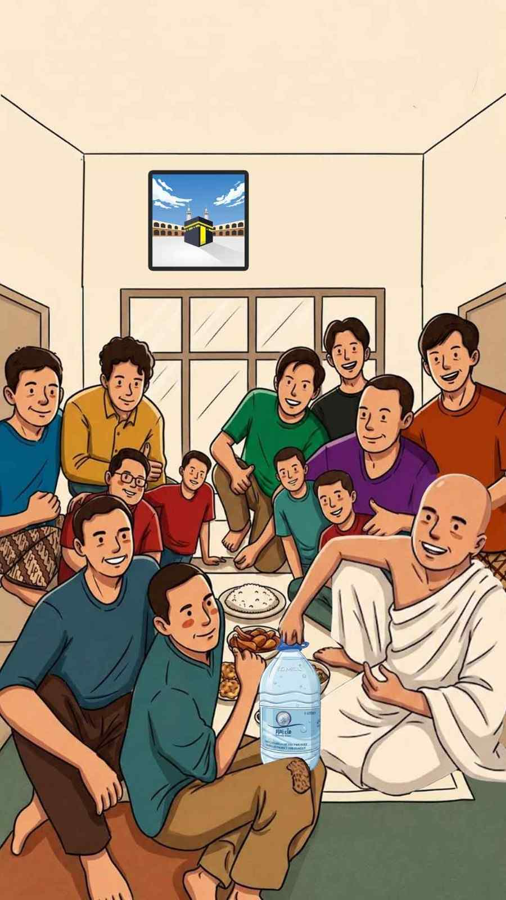

Bismillah ala barakatillah
Arif mengundang antum untuk hadir di tasyakuran sederhana kami
Hadiqah depan imarah 25, belakang imarah 23
Di rumput-rumputnya
Tasyakuran
1. Persiapan Akomodasi dan Konsumsi 2. Sambutan 3. Makan Malam Bersama 4. Foto Bersama & Shalat Isya berjamaah
Yang penting pake celana guys.
🍹 Es Teh Segar
Senin, 20 Juli 2026
6 Shafar 1448 H
⏰ Pukul 20:00 CLT